ClinicusMed · Fáscia Lata, Compartimentos da Coxa e da Perna, Canal dos Adutores e Fossa Poplítea · Ficha Padronizada
Essa ficha cobre a miologia do membro inferior abaixo do quadril: a região femoral (coxa), com 10 músculos distribuídos em três compartimentos (anterior, medial e posterior), e a perna, com 13 músculos distribuídos em quatro compartimentos (anterior, lateral, posterior superficial e posterior profundo). Entre as duas regiões fica a fossa poplítea, passagem dos vasos e nervos da coxa para a perna. Cada compartimento tem uma inervação e uma ação característica, e é essa lógica que organiza o estudo.
Ao final dessa ficha, você será capaz de listar os músculos de cada compartimento da coxa e da perna; descrever inserções proximais e distais dos principais músculos; indicar inervação e ação de cada grupo; reconhecer a pata de ganso, o triângulo femoral, o canal dos adutores, a fossa poplítea e o tendão calcâneo; e aplicar esses conhecimentos a pé caído, tendinopatia do calcâneo, síndrome compartimental e lesões dos isquiotibiais.
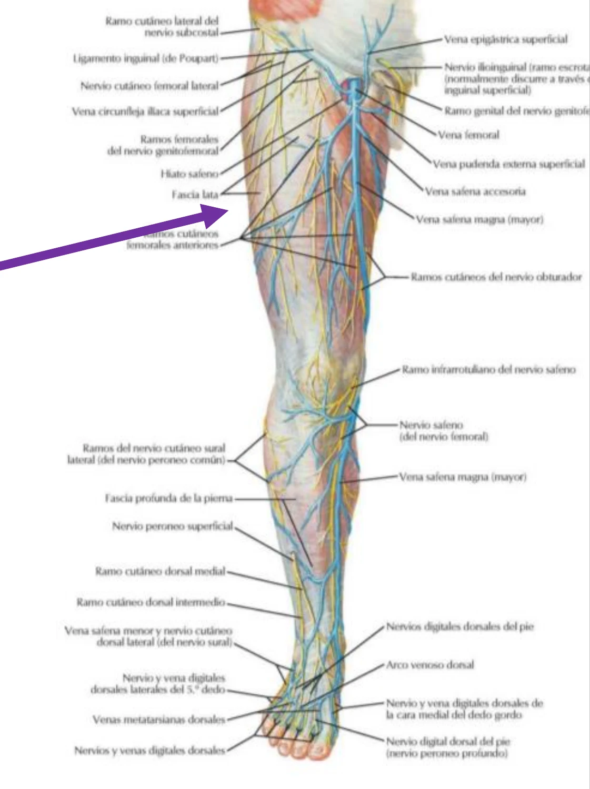
A fáscia lata (aponeurose femoral) forma uma bainha cilíndrica em torno da coxa. Seu maior espessamento é na face lateral, o trato iliotibial.
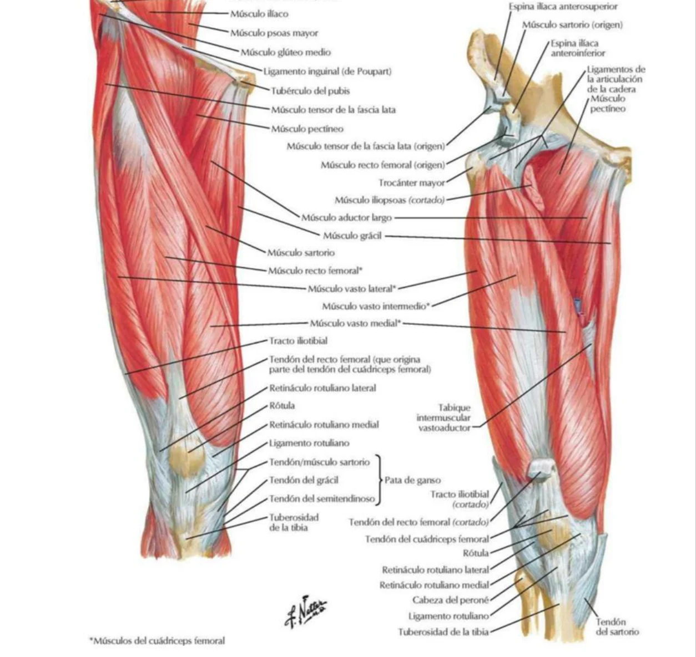
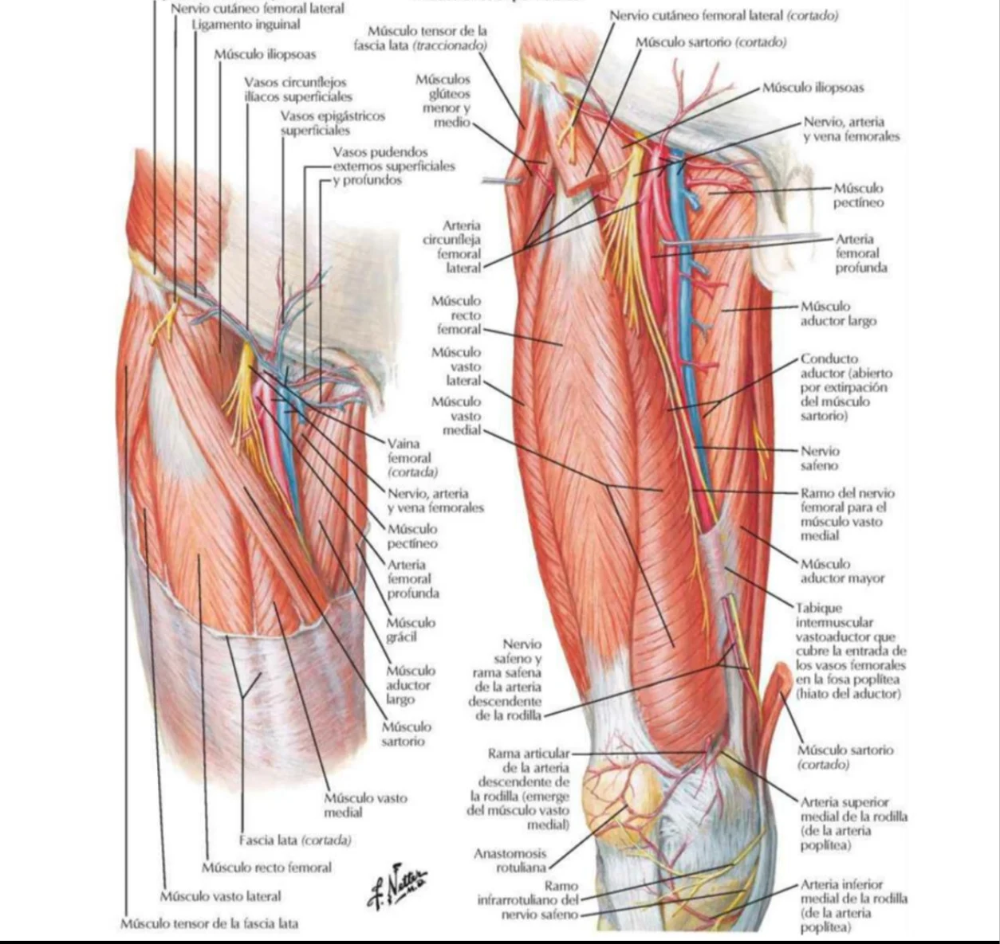
| Compartimento | Músculos | Ação geral |
|---|---|---|
| Anterior | Sartório e quadríceps femoral | Extensores da perna sobre a coxa |
| Medial | Grácil, pectíneo, adutor longo, adutor curto e adutor magno | Adutores: aproximam a coxa do plano sagital mediano |
| Posterior | Bíceps femoral, semitendíneo e semimembranáceo | Flexores da perna sobre a coxa |
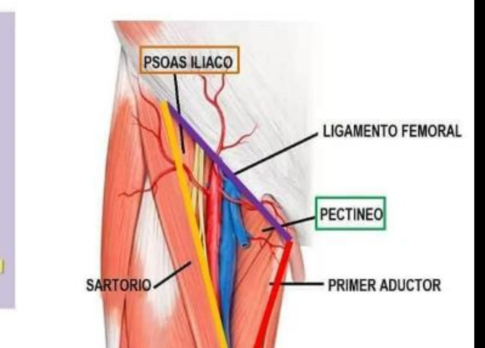
Músculo longo e em fita, vai de cima para baixo e de lateral para medial, do osso do quadril à extremidade superior da tíbia.
| Item | Descrição |
|---|---|
| Inserção superior | Espinha ilíaca anterossuperior (EIAS) |
| Inserção inferior | Parte medial da extremidade superior da tíbia, formando com o grácil e o semitendíneo a pata de ganso (pes anserinus) |
| Inervação | Nervo femoral (L2-L3) |
| Ação | Flexiona a perna sobre a coxa e leva a coxa a abdução e rotação lateral ("posição do alfaiate", daí o nome) |
No terço superior forma o limite lateral do triângulo femoral (de Scarpa), cuja base é o ligamento inguinal. Depois cruza os vasos femorais, dos quais é "satélite", e cruza a borda do adutor longo, fechando o triângulo por baixo.
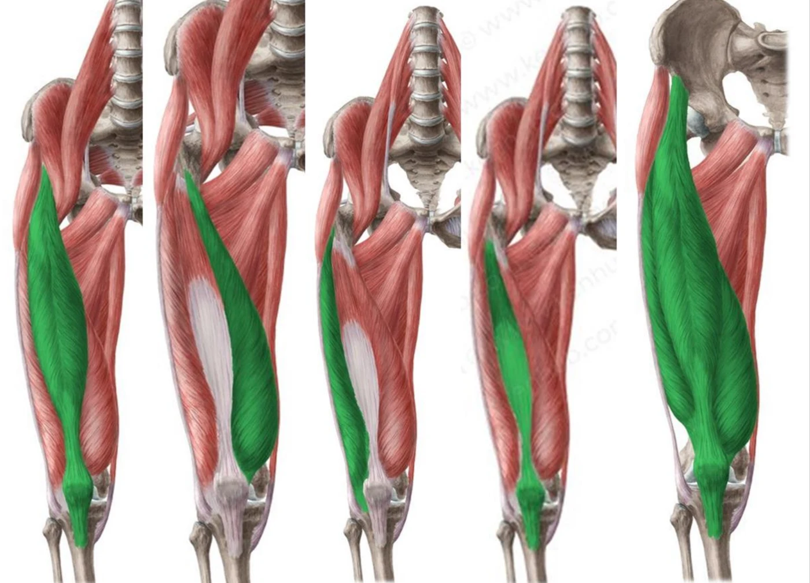
É o músculo extensor mais potente da perna sobre a coxa. Quatro componentes, de origens diferentes, convergem para inserção na patela, prolongada à tíbia pelo ligamento patelar.
| Componente | Inserção proximal |
|---|---|
| Reto femoral | Tendão direto na espinha ilíaca anteroinferior (EIAI); tendão refletido no sulco supra-acetabular e cápsula; tendão recorrente aderido à cápsula |
| Vasto lateral | Lâmina tendínea na borda anterior e inferior do trocânter maior e no ramo lateral de trifurcação da linha áspera |
| Vasto medial | Lábio medial da linha áspera e linha rugosa que a une ao colo do fêmur |
| Vasto intermédio | Três quartos superiores das faces anterior e lateral do fêmur e parte inferior do lábio lateral da linha áspera |
Planos tendíneos distais: superficial (tendão do reto femoral, na base anterior da patela), médio (vastos medial e lateral, que se fundem atrás do tendão do reto) e profundo (vasto intermédio, na base da patela por trás dos outros).
Inervação: nervo femoral (L3-L4). Vascularização: ramo ascendente da artéria circunflexa femoral lateral, colateral da artéria femoral profunda.
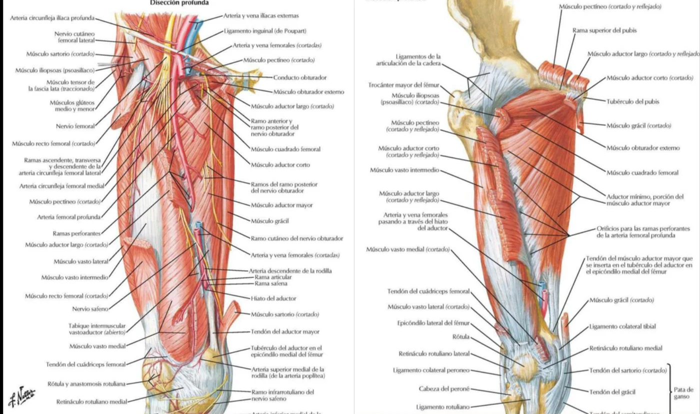
| Músculo | Inserção proximal | Inserção distal | Inervação |
|---|---|---|---|
| Grácil (reto interno) | Ramo inferior do púbis e ramo do ísquio, lateral à sínfise (ângulo do púbis) | Parte superior da face medial da tíbia (pata de ganso) | Nervo obturador (L2-L4) |
| Pectíneo | Espinha púbica, pécten do púbis, ligamento pectíneo, lábio anterior do sulco obturatório | Linha de trifurcação medial da linha áspera (linha pectínea do fêmur), abaixo do trocânter menor | Plexo lombar (L2-L4) |
O grácil é flexor da perna e a leva um pouco medialmente; também aduz a coxa porque ela acompanha a perna no movimento medial.
| Músculo | Inserção proximal | Inserção distal |
|---|---|---|
| Adutor longo (mediano) | Ângulo do púbis, entre sínfise e espinha púbica; medial ao pectíneo, acima do adutor curto | Porção média do interstício da linha áspera, por aponeurose atravessada pelos vasos perfurantes, atrás do vasto medial |
| Adutor curto (menor) | Face anterior do corpo do púbis; ramo descendente do púbis, entre obturador externo e grácil | Fascículo superior: linha de trifurcação medial; fascículo inferior: parte mais alta do lábio medial da linha áspera |
| Adutor magno (maior) | Dois terços inferiores do ramo isquiopúbico (abaixo do obturador externo) e face lateral/inferior do túber isquiático | Fascículo medial: tubérculo do adutor (côndilo medial do fêmur); fascículo lateral: toda a linha áspera |
Entre o tendão do fascículo medial e a linha áspera forma-se um arco maior que, com o fêmur, delimita o hiato dos adutores (anel do 3.º adutor), por onde os vasos femorais passam à região poplítea.
Inervação: ramos do plexo lombar (L2-L4). Vascularização: artéria femoral profunda (circunflexa femoral medial para a parte superior e perfurantes).
Ação: pectíneo, longo e curto são adutores, rotadores laterais e também flexores da coxa; o magno é o principal adutor, com fascículos superiores e médios rotadores laterais e inferiores rotadores mediais.
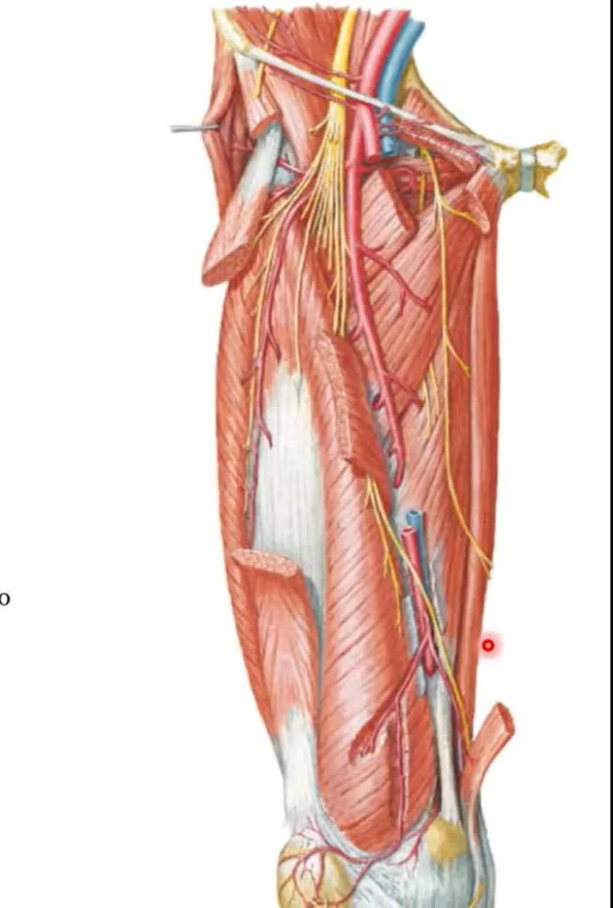
O canal de Hunter mede cerca de 4 travessas de dedo, comunica o triângulo femoral (acima) com a fossa poplítea (abaixo) e transporta os vasos femorais.
| Parede | Estrutura |
|---|---|
| Sector proximal — medial | Adutor longo (1.º adutor) |
| Sector proximal — lateral | Vasto medial do quadríceps |
| Sector proximal — anterior | Fáscia subsartorial (coberta pelo sartório) |
| Sector distal — posteromedial | Adutor magno (3.º adutor) |
| Sector distal — anteromedial | Septo intermuscular vastoadutor |
| Sector distal — lateral | Vasto medial |
| Hiato adutor | Septo perfurado pela artéria genicular descendente e pelo nervo safeno |
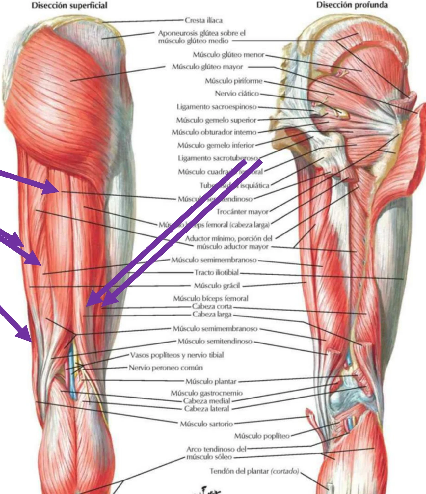
Os três músculos posteriores são flexores da perna sobre a coxa e, por cruzarem o quadril, também estendem a coxa.
| Músculo | Inserção proximal | Inserção distal | Inervação |
|---|---|---|---|
| Bíceps femoral | Cabeça longa: parte superior e lateral do túber isquiático, com tendão comum ao semitendíneo. Cabeça curta: parte inferior do lábio lateral da linha áspera e septo intermuscular lateral | Vértice da cabeça da fíbula (envolvendo o ligamento colateral fibular), com expansões no côndilo lateral da tíbia e na fáscia profunda da perna | Ciático (L5, S1-S3) |
| Semitendíneo | Face posterior do túber isquiático (tendão comum com a cabeça longa do bíceps) | Parte medial da extremidade superior da tíbia (pata de ganso) | Ramos colaterais do ciático (S1, S2) |
| Semimembranáceo | Face posterior do túber isquiático (terço superior em ampla membrana) | Tendão terminal medial, por trás do côndilo medial, até a tíbia e articulação do joelho | Ramo colateral do ciático (L5, S1, S2) |
Vascularização: ramos perfurantes da artéria femoral profunda (semitendíneo também por ramos das circunflexas).
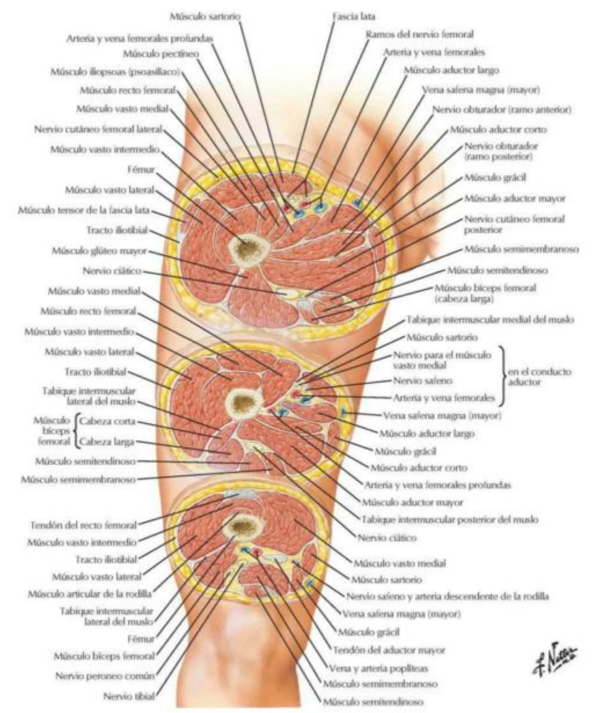
Nos cortes se vê o fêmur central, o quadríceps à frente (com o sartório superficial), os adutores e o grácil medialmente, os isquiotibiais atrás e, entre eles, o nervo ciático, a artéria e a veia femoral e a veia safena magna.
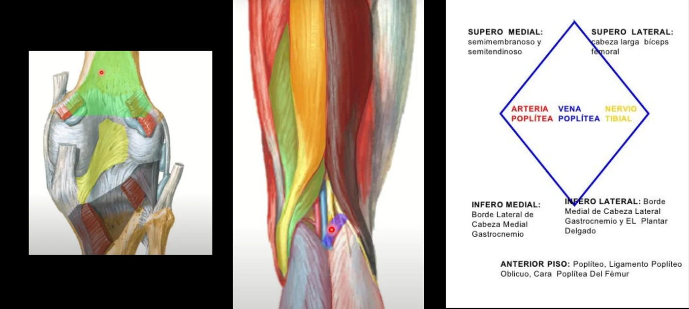
| Limite | Estrutura |
|---|---|
| Superomedial | Semimembranáceo e semitendíneo |
| Superolateral | Cabeça longa do bíceps femoral |
| Inferomedial | Borda medial da cabeça medial do gastrocnêmio |
| Inferolateral | Borda lateral da cabeça lateral do gastrocnêmio e músculo plantar |
| Assoalho (anterior) | Poplíteo, ligamento poplíteo oblíquo e face poplítea do fêmur |
O conteúdo, de superficial para profundo, é nervo tibial, veia poplítea e artéria poplítea.
A perna tem 13 músculos, que agem sobre o pé e os dedos. Para evitar confusão com os nomes ("extensores" são, na verdade, flexores do pé sobre a perna), usa-se flexão dorsal e flexão plantar do pé e dos dedos.
| Compartimento | Músculos | Inervação | Ação principal |
|---|---|---|---|
| Anterior (4) | Tibial anterior, extensor longo dos dedos, extensor longo do hálux, terceiro fibular | Nervo fibular (profundo) | Flexão dorsal |
| Lateral (2) | Fibular longo e fibular curto | Nervo fibular superficial (L4-S2) | Flexão plantar, eversão |
| Posterior superficial (3) | Gastrocnêmio, sóleo, plantar | Nervo tibial | Flexão plantar |
| Posterior profundo (4) | Poplíteo, tibial posterior, flexor longo dos dedos, flexor longo do hálux | Nervo tibial (L5, S1, S2) | Flexão plantar, inversão |
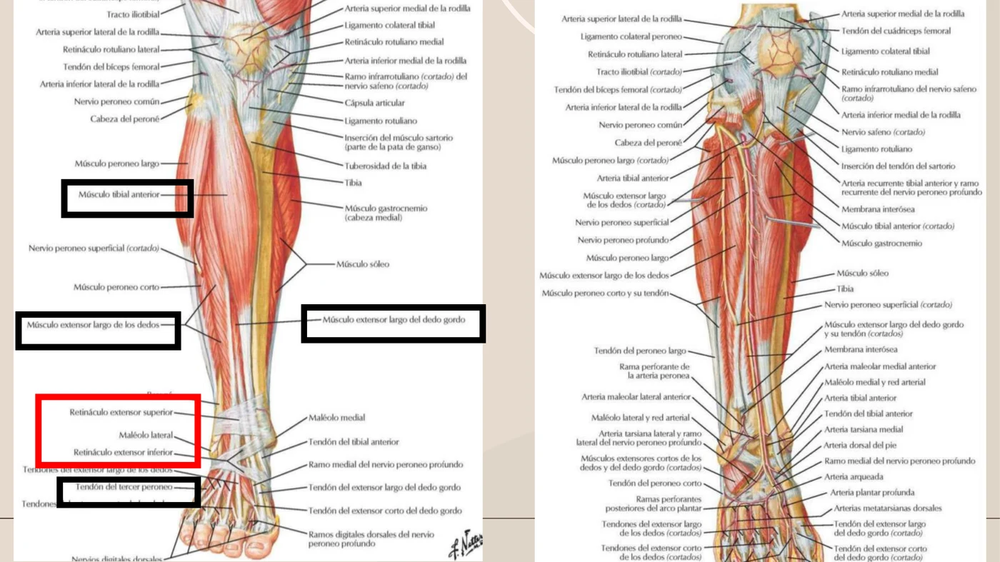
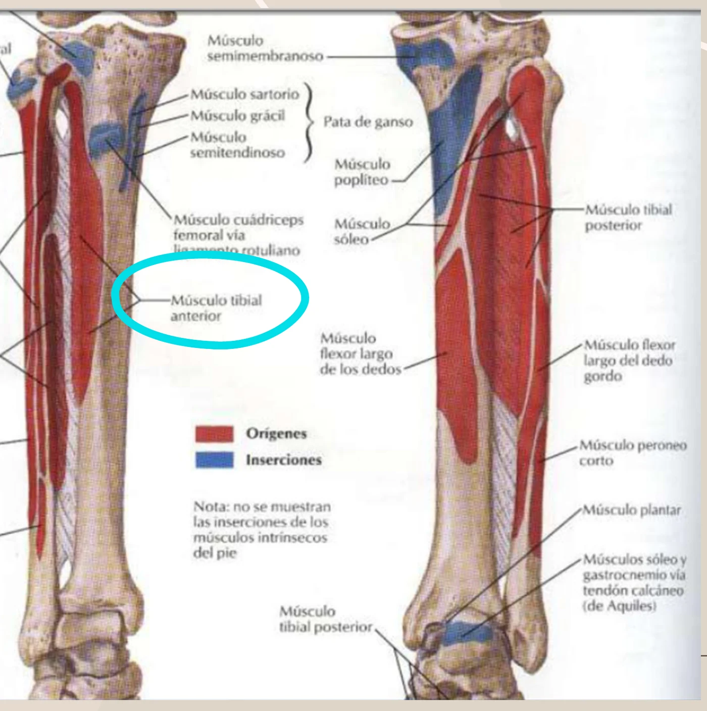
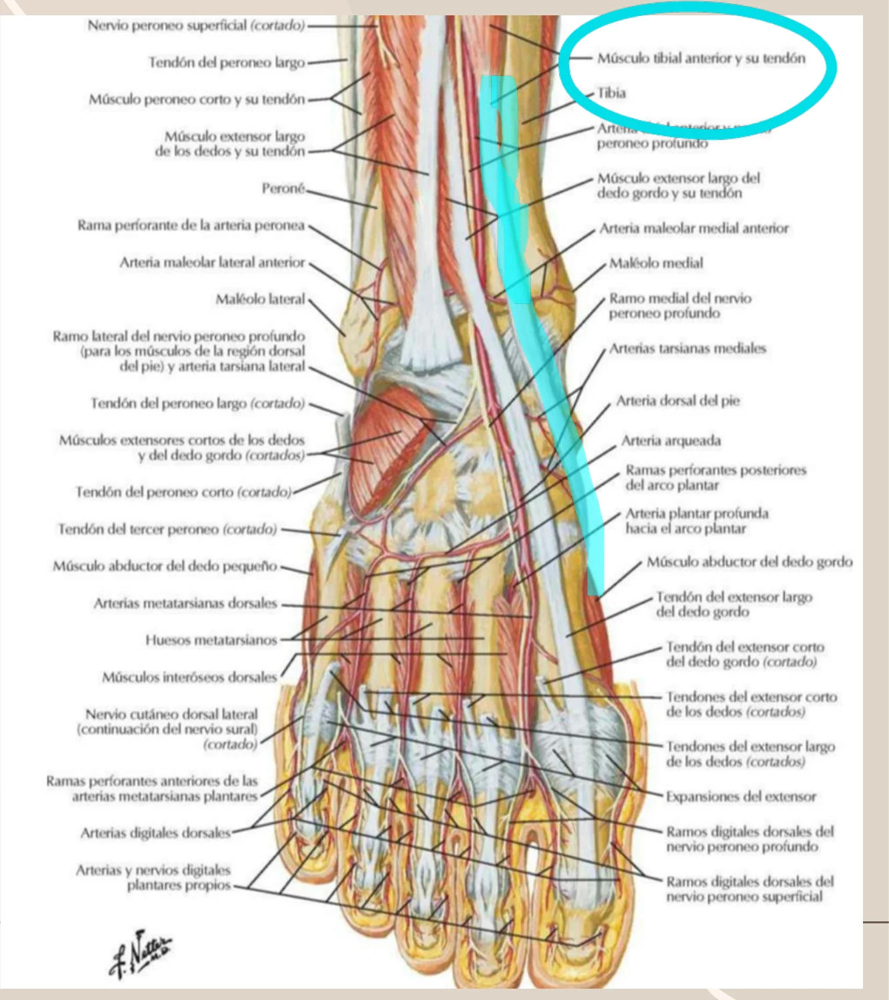
Os quatro músculos ocupam o espaço entre a borda anterior da tíbia e a borda anterior da fíbula, sobre a face anterior da membrana interóssea.
| Músculo | Inserção distal | Ação |
|---|---|---|
| Tibial anterior | Face medial do cuneiforme medial e extremidade posterior do 1.º metatarsal | Flexão dorsal, adução e rotação medial (inversão) do pé |
| Extensor longo dos dedos | Tendão divide-se em 4; cada um trifurca-se: o médio na base da falange média, os dois laterais na falange distal | Flexão dorsal dos quatro últimos dedos e do pé; rotação lateral do pé |
| Extensor longo do hálux | Falanges proximal e distal do hálux (acompanha o bordo medial do 1.º metatarsal) | Flexão dorsal do hálux; flexão dorsal, adução e rotação medial do pé |
| Terceiro fibular | Tuberosidade do 5.º metatarsal | Flexão dorsal, abdução e rotação lateral do pé |
Irrigação: artéria tibial anterior e veias satélites. Inervação: nervo fibular.
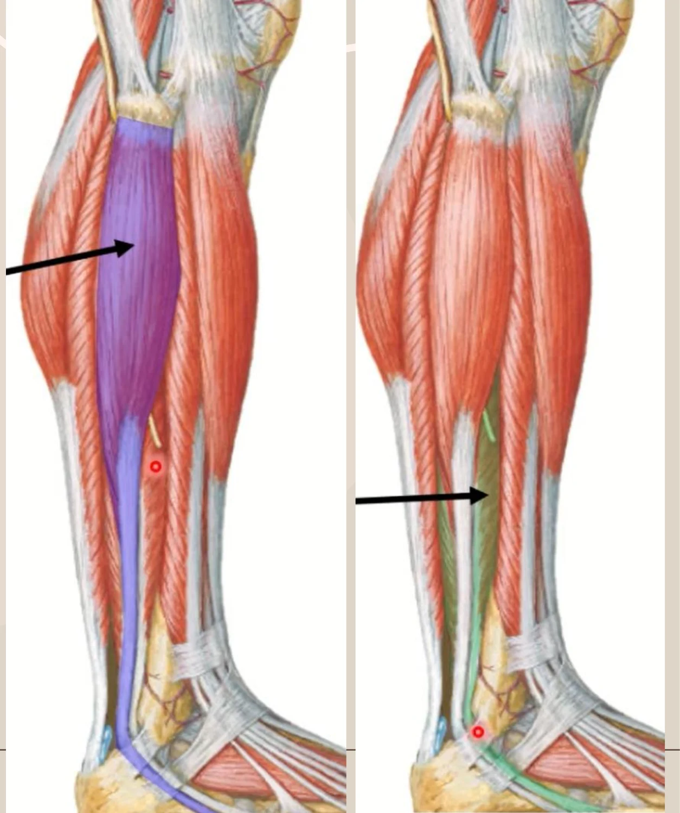
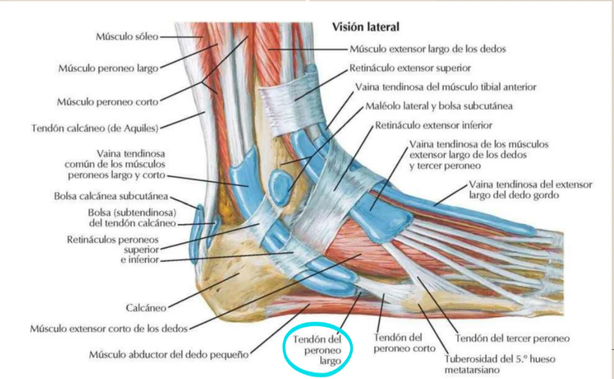
| Músculo | Inserção distal | Ação |
|---|---|---|
| Fibular longo (mais superficial e longo) | Tuberosidade lateral da base do 1.º metatarsal, com expansões ao cuneiforme medial, 2.º metatarsal e 1.º interósseo dorsal | Flexão plantar e rotação lateral do pé; antagonista do tríceps sural no equilíbrio transversal; sustenta o arco plantar |
| Fibular curto (profundo ao longo) | Tuberosidade da base do 5.º metatarsal | Flexão plantar, abdução e rotação lateral do pé |
Inervação: ramos do nervo fibular superficial (fibular longo: L4, L5, S1, S2; fibular curto: L5, S1, S2). Irrigação: tibial anterior e, de forma inconstante, fibular.
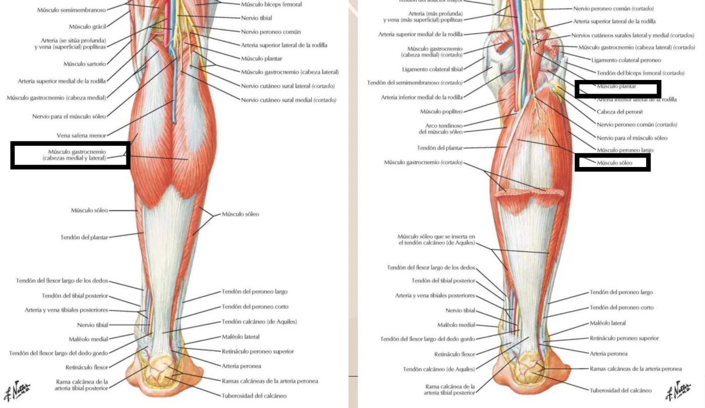
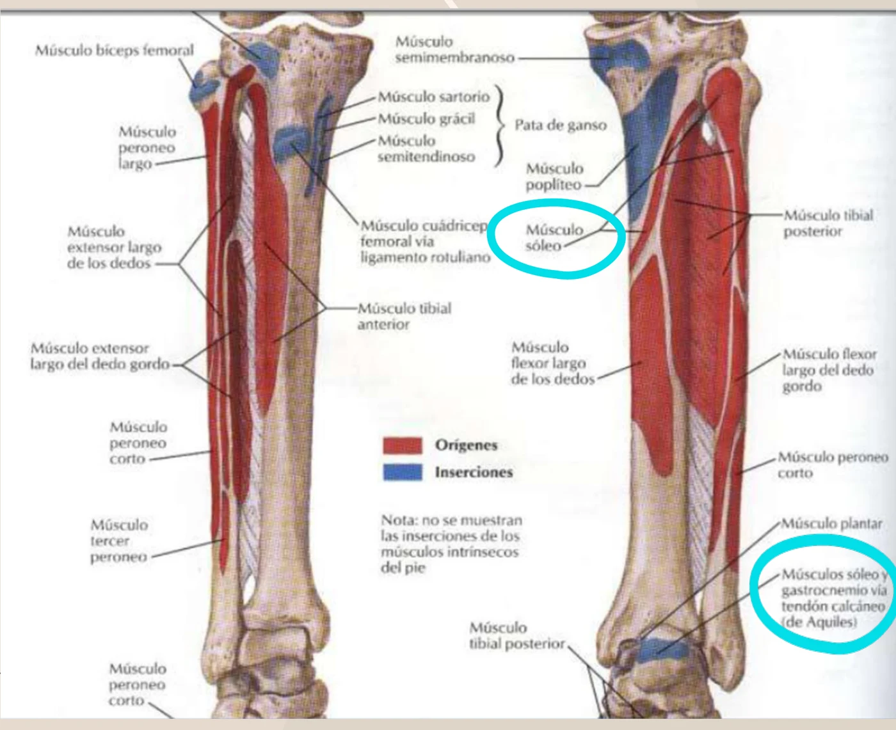
O tríceps sural reúne o gastrocnêmio (cabeças medial e lateral) e o sóleo, com três cabeças de origem e inserção comum no tendão calcâneo. O plantar compartilha o plano muscular, mas não faz parte do tríceps.
| Músculo | Inserção proximal | Observação |
|---|---|---|
| Gastrocnêmio (gêmeos) | Cabeça lateral e medial nos côndilos femorais correspondentes | As cabeças convergem na interlinha do joelho e o ventre se une ao tendão do sóleo no meio da perna |
| Sóleo | Cabeça e face posterior da fíbula, linha do sóleo da tíbia e arco fibroso entre ambas | Largo, profundo ao gastrocnêmio |
| Plantar | Côndilo lateral do fêmur e cápsula do joelho | Rudimentar; tendão longo e fino que acompanha o bordo medial do tendão calcâneo |
Tendão calcâneo (de Aquiles): inserção terminal do tríceps sural, passa atrás da articulação talocrural e fixa-se nos dois terços inferiores da face posterior do calcâneo, separado dele por uma bolsa sinovial na parte superior.
Inervação: nervo tibial. Irrigação: duas artérias gastrocnêmicas (da poplítea) e colaterais das tibial posterior e fibular para o sóleo.
Ação: o mais poderoso flexor plantar do pé; rotador medial; aplica o arco do pé contra o solo na marcha (antagonista do fibular longo). O gastrocnêmio é acessoriamente flexor da perna sobre a coxa. Solicitado na marcha e no salto.
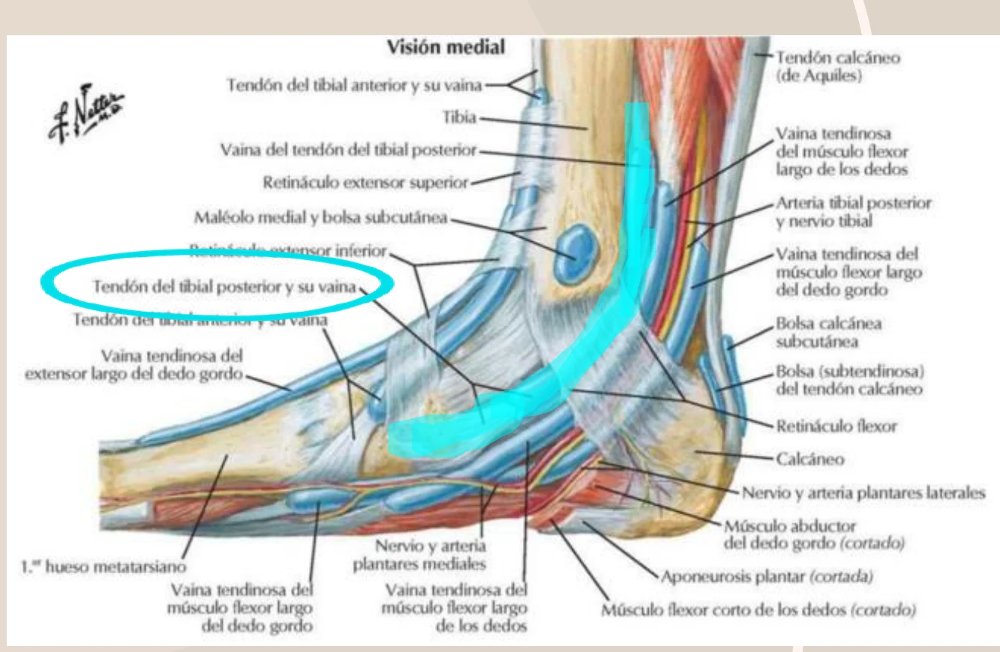
| Músculo | Inserção proximal | Inserção distal | Ação |
|---|---|---|---|
| Poplíteo | Côndilo lateral do fêmur (tendão que passa sob o menisco lateral e o ligamento poplíteo arqueado) | Lábio superior da linha do sóleo e face posterior da tíbia acima dela | Flexor e rotador medial da perna sobre a coxa |
| Flexor longo dos dedos (medial) | Lábio inferior da linha do sóleo e terço médio da face posterior da tíbia | Base da falange distal dos quatro últimos dedos | Flexão plantar dos dedos e do pé |
| Tibial posterior (entre os dois flexores) | Tíbia, fíbula e membrana interóssea | Tuberosidade do navicular, com expansões para os três cuneiformes e os três metatarsais médios | Flexão plantar, adução e rotação medial (inversão) do pé |
| Flexor longo do hálux (lateral) | Dois terços inferiores da face posterior da fíbula e membrana interóssea | Falange distal do hálux | Flexão plantar do hálux, dos dedos seguintes e do pé |
Irrigação: vasos tibiais posteriores (flexor longo dos dedos e tibial posterior) e vasos fibulares (flexor longo do hálux). Inervação: nervo tibial (L5, S1, S2); o poplíteo recebe o ramo poplíteo do tibial.
| Tema | Frequência |
|---|---|
| Inervação dos compartimentos da coxa e da perna | 🔥🔥🔥🔥🔥 |
| Quadríceps: componentes, inserções e ação | 🔥🔥🔥🔥 |
| Pata de ganso e triângulo femoral | 🔥🔥🔥🔥 |
| Canal dos adutores e hiato adutor | 🔥🔥🔥🔥 |
| Isquiotibiais e fossa poplítea | 🔥🔥🔥🔥 |
| Tríceps sural e tendão calcâneo | 🔥🔥🔥🔥 |
| Músculos da perna: compartimentos e ações | 🔥🔥🔥🔥 |
O nervo fibular comum contorna o colo da fíbula, onde é superficial e vulnerável.
O tendão calcâneo suporta a carga do tríceps sural na marcha, corrida e salto.
Cada compartimento da perna é fechado por fáscia, tíbia, fíbula e membrana interóssea.
Os isquiotibiais cruzam quadril e joelho e trabalham com grande alongamento em corridas e chutes.
O triângulo femoral (limite lateral = sartório, medial = adutor longo, base = ligamento inguinal) contém, de lateral para medial, nervo, artéria e veia femorais.
A fossa poplítea contém o nervo tibial, a veia e a artéria poplíteas, além de linfonodos.
18 imagens — ilustrações Netter e diagramas da cátedra sobre fáscia lata, compartimentos da coxa e da perna, canal dos adutores, fossa poplítea e tendões do tornozelo. Toque em qualquer imagem pra abrir em tamanho grande (🔍 zoom).
20 rodadas de perguntas rápidas sobre classificação do sistema nervoso, morfologia da medula espinal, raízes, meninges e vascularização, 1 por vez, 60 segundos pra você responder mentalmente. A pergunta muda sozinha quando o tempo acaba (ou clica em "Já sei, próxima"). No final, você vê o gabarito completo de tudo.
O sistema guarda, no seu navegador, quais cards você já sabe bem e quais precisam voltar mais cedo — cada vez que você avalia um card, ele recalcula quando ele deve voltar.
20 questões cobrindo classificação do sistema nervoso, morfologia e configuração interna da medula espinal, raízes, meninges e vascularização. Escolhe uma alternativa, depois clica em "Ver comentário completo".